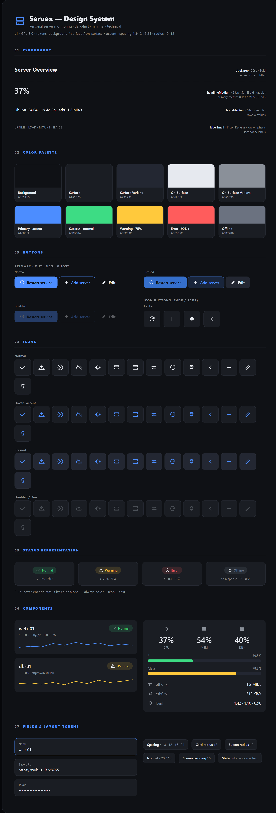
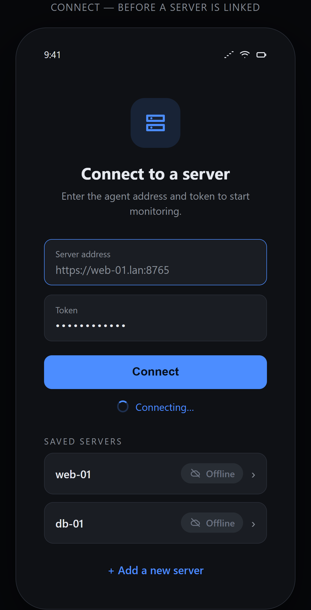
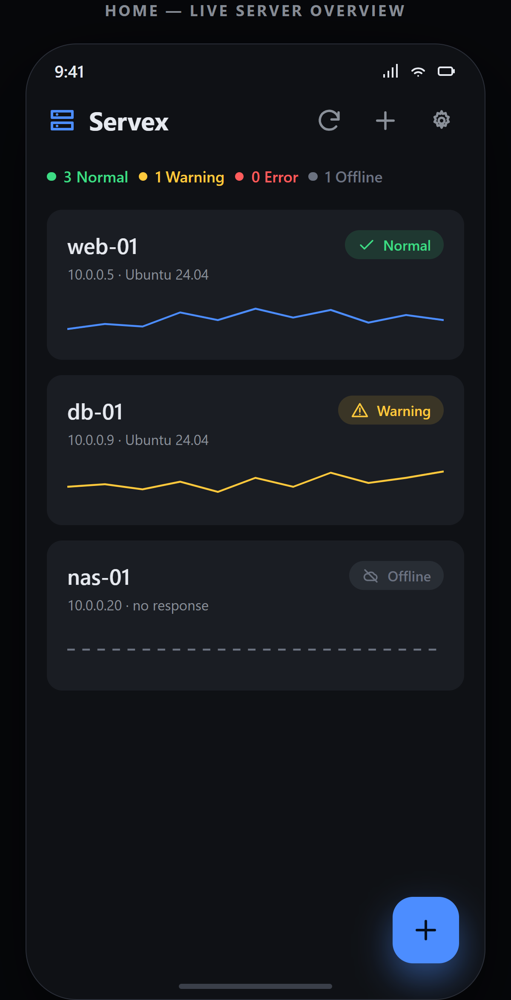

서버에 설치한 경량 에이전트와 직접 통신해 CPU · 메모리 · 디스크 · 네트워크 상태를 실시간으로 보여줍니다.
Agent — 서버측 경량 모니터 (Python 표준 라이브러리)
App — 지표 조회 · 그래프 · 알림 · 원격 액션
키워드 — Minimal · Clear · Technical · Calm
색 · 타이포그래피 · 버튼 · 아이콘 · 컴포넌트를 하나의 규칙으로 정의했습니다.

아이콘은 직접 그린 벡터(24dp · 2dp stroke). 색만으로 상태를 구분하지 않습니다.
서버 주소와 토큰을 입력해 연결합니다. 저장된 서버는 바로 선택할 수 있습니다.

전체 상태를 먼저, 그다음 서버별 요약. 색 · 아이콘 · 텍스트로 상태를 한눈에.

앱은 Kotlin · Jetpack Compose, 에이전트는 외부 의존성 없는 Python으로 구성됩니다.
Kotlin · Jetpack Compose (Material 3) · MVVM · OkHttp · kotlinx.serialization · DataStore · WorkManager
Python 3 · 표준 라이브러리만 사용 · 단일 파일 · Bearer 토큰 인증
다크 우선 · 10색 토큰 · 직접 그린 벡터 아이콘 · 카드형 컴포넌트
GPL-3.0 · 오픈소스 공개 (Servex)